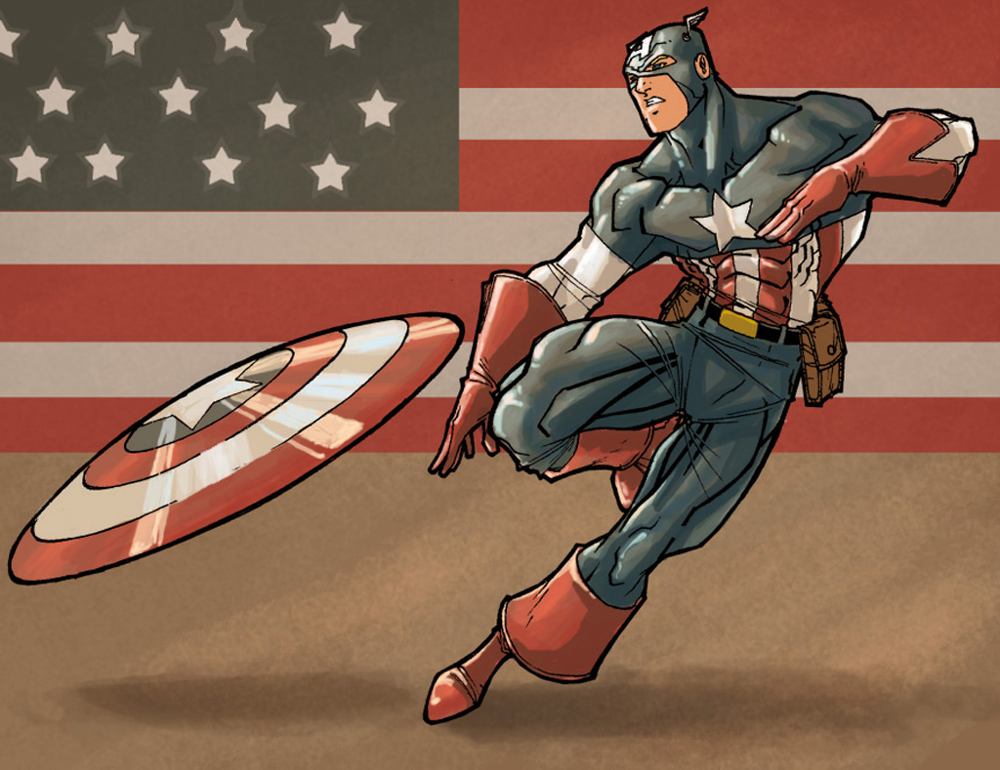

美国队长
美国队长（Captain America）是美
国漫威漫画旗下超级英雄，由乔·西蒙和杰克·科比联合创造，初次登场于1941年3月出版的《美国队长》漫画（Captain America Comics）第1期，他被视为是美国精神
的象征，本名史蒂文·“史蒂夫”·罗杰斯（Steven "Steve" Rogers）原本是一个身体瘦弱的新兵，在接受美国政府的实验改造后变成了“超级士兵”，这使其力量、速度、
耐力等各项体能都远超出于常人，且还被美国政府赋予了由世界上最坚硬的金属之一：吸音钢制成的盾牌，从此史蒂夫以美国队长的身份，为美国及世界在二战中立下显赫战功，
后来在二战尾声的一次行动中，美国队长与宿敌红骷髅战斗，并掉入大海之中被冰封近70年，直到被神盾局发现并解冻后才加入了复仇者联盟，此后在美国队长的领导下，
复仇者联盟出生入死，赢得一次又一次近乎不可能的胜利。